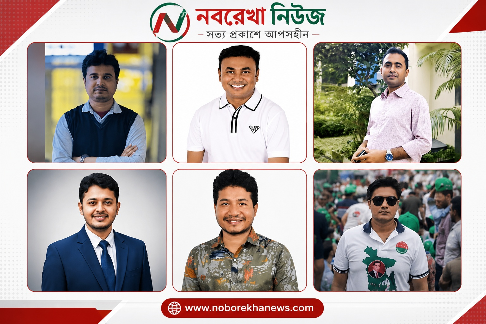

ছাত্রদলের নতুন নেতৃত্বে কারা? কেন্দ্রীয় কমিটি ঘিরে বাড়ছে আলোচনা
নবরেখা নিউজ ডেস্ক
বাংলাদেশ জাতীয়তাবাদী ছাত্রদলের বর্তমান কেন্দ্রীয় কমিটির মেয়াদ শেষ হওয়ার পর থেকেই নতুন নেতৃত্ব নিয়ে আলোচনা ক্রমেই জোরালো হচ্ছে। সভাপতি ও সাধারণ সম্পাদকসহ গুরুত্বপূর্ণ পদগুলোতে কারা দায়িত্ব পেতে পারেন—এ নিয়ে সংগঠনের বিভিন্ন পর্যায়ে চলছে নানা হিসাব-নিকাশ।
২০২৪ সালের ১ মার্চ গঠিত বর্তমান কেন্দ্রীয় কমিটির নেতৃত্বে রয়েছেন সভাপতি রাকিবুল ইসলাম রাকিব এবং সাধারণ সম্পাদক নাসির উদ্দিন নাসির। দুই বছর মেয়াদি এই কমিটির সময়সীমা শেষ হওয়ার পর নতুন কমিটি গঠনের সম্ভাবনা নিয়ে নেতাকর্মীদের মধ্যে আগ্রহ তৈরি হয়েছে। তবে নতুন কমিটি ঘোষণার বিষয়ে এখনো আনুষ্ঠানিক সময়সূচি প্রকাশ হয়নি।
সভাপতি পদে আলোচনায় একাধিক নাম
নতুন কেন্দ্রীয় কমিটির সভাপতি পদে বর্তমান কমিটির কয়েকজন শীর্ষ নেতার নাম আলোচনায় রয়েছে। সিনিয়রিটি বিবেচনায় বর্তমান সাধারণ সম্পাদক নাসির উদ্দিন নাসির, সিনিয়র যুগ্ম সাধারণ সম্পাদক শ্যামল মালুম এবং সহসভাপতি জহির রায়হান আহমেদের নাম উঠে আসছে।
এ ছাড়া বর্তমান কমিটির সহসভাপতি এজাজুল কবির রুয়েল, মঞ্জুরুল আলম রিয়াদ, রিয়াদ রহমান, এইচ এম আবু জাফর, খোরশেদ আলম সোহেল ও সাফি ইসলামের নামও সম্ভাব্য নেতৃত্বের আলোচনায় রয়েছে।
এর পাশাপাশি সাংগঠনিক সম্পাদক আমানউল্লাহ আমান, যুগ্ম সাধারণ সম্পাদক মমিনুল ইসলাম জিসান, মোস্তাফিজুর রহমান, প্রচার সম্পাদক শরীফ প্রধান শুভ এবং কয়েকজন সাবেক ও বর্তমান নেতার নাম নিয়েও আলোচনা চলছে।
সাধারণ সম্পাদক পদেও চলছে হিসাব-নিকাশ
সাধারণ সম্পাদক পদে সম্ভাব্য প্রার্থী হিসেবে ঢাকা বিশ্ববিদ্যালয় ছাত্রদলের সভাপতি গণেশ চন্দ্র রায় সাহস, কেন্দ্রীয় কমিটির যুগ্ম সাধারণ সম্পাদক রাজু আহমেদ, তারিকুল ইসলাম তারিক ও তারেক হাসান মামুনের নাম আলোচনায় রয়েছে।
এ ছাড়া শ্যামল মালুম, আমানউল্লাহ আমান, ফারুক হোসেন, মমিনুল ইসলাম জিসানসহ আরও কয়েকজন নেতার নাম বিভিন্ন পর্যায়ে আলোচনায় এসেছে। সম্ভাব্য তালিকায় নামের কিছুটা ভিন্নতাও দেখা যাচ্ছে।
ঢাকা বিশ্ববিদ্যালয় ছাত্রদলেও পরিবর্তনের আলোচনা
কেন্দ্রীয় কমিটির পাশাপাশি ঢাকা বিশ্ববিদ্যালয় শাখা ছাত্রদলের নেতৃত্ব নিয়েও আলোচনা চলছে। বর্তমান কমিটির মেয়াদ শেষ হওয়ায় নতুন নেতৃত্ব নিয়ে নেতাকর্মীদের মধ্যে আগ্রহ তৈরি হয়েছে।
সম্ভাব্য নেতৃত্বের আলোচনায় বিভিন্ন পর্যায়ের বর্তমান ও সাবেক নেতাদের নাম উঠে আসছে। তবে কারা শেষ পর্যন্ত দায়িত্ব পাবেন, সেটি নির্ভর করবে দলীয় সিদ্ধান্ত ও সাংগঠনিক মূল্যায়নের ওপর।
চূড়ান্ত সিদ্ধান্তের অপেক্ষা
ছাত্রদলের নতুন কমিটি নিয়ে সামাজিক যোগাযোগমাধ্যমসহ সাংগঠনিক বিভিন্ন পর্যায়ে আলোচনা চললেও এখন পর্যন্ত কোনো নামকে চূড়ান্ত বলা যাচ্ছে না। দলীয় সিদ্ধান্তের আগে সম্ভাব্য প্রার্থীদের নিয়ে নানা ধরনের আলোচনা ও তৎপরতা থাকলেও শেষ পর্যন্ত কেন্দ্রীয় নেতৃত্বের সিদ্ধান্তই চূড়ান্ত হবে।
সংশ্লিষ্টদের মতে, নতুন কমিটিতে রাজপথের আন্দোলন-সংগ্রামে সক্রিয়তা, সাংগঠনিক দক্ষতা, নেতৃত্বের সক্ষমতা এবং সংগঠনের প্রতি দীর্ঘদিনের ভূমিকা— এসব বিষয় গুরুত্ব পেতে পারে।
ফলে ছাত্রদলের পরবর্তী কেন্দ্রীয় নেতৃত্বে কারা আসছেন, তা নিয়ে এখনো কৌতূহল রয়েছে সংগঠনের নেতাকর্মীদের মধ্যে। আনুষ্ঠানিক ঘোষণা না আসা পর্যন্ত সম্ভাব্য তালিকায় থাকা নামগুলোকে কেবল আলোচনার অংশ হিসেবেই দেখছেন সংশ্লিষ্টরা।